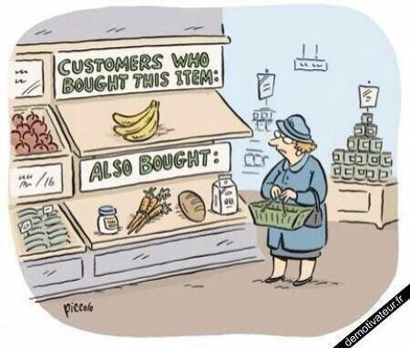

June 01, 2017
資料科學的Hello World
Dashboard的製作就是資料科學團隊的Hello World
檢驗資料的品質

檢驗科學家們對資料的理解

每導入一個資料源，就應該要製作對應的Dashboard
上游污染、下游受害

Dashboard能為資料科學團隊建立初步的信譽

資料分析的目的是價值
資料部門在企業中是成本單位
老闆對資料團隊的期待…?
有時老闆已經知道團隊的任務

金融投資、避險
廣告推薦引擎
有時資料科學家要自己發想問題
Google用Machine Learning省電
貨運公司UPS發現不左轉比較省油
但是老闆不願意只看到……
方法的「創新」不重要，重要的是對公司帶來的影響
問題：對一個資料科學團隊，怎麼產生價值？
資料整合是新價值的捷徑
數據分析是個悠久的知識產業
- 玉山銀行的CRM部門已經十年……
- 工廠用資料做品管提升已經數十年……
單一資料可能已經被分析得透徹…
- 分析獲得的知識，要「新」才有意義
大數據時的不同
資料整合變成產生價值的捷徑

資策會資安所把不同廠商的資安紀錄整合
==> 可以觀察與追蹤跨區駭客的足跡
資料整合變成產生價值的捷徑

風速資料與機場起降資料整合 ==> 發現兩者的關係
資料整合變成產生價值的捷徑
房貸餘額與GDP的整合 ==> 房地產泡沫化指數
資料整合的方式
SQL 上的資料整合
請參考 https://en.wikipedia.org/wiki/Join_(SQL) 上的說明幫我做個1~2頁的介紹，如果不行就留白我之後自己補上
常見時間資料整合的問題：
相同欄位對應的意義不一定一樣
解決辦法
找出合理的比對時間點
常見的空間資料整合問題
實務上的注意事項
對資料的操作可以CREATE、READ但不要UPDATE、DELETE
Immutable 對資料品質非常重要
Immutable Data
處理資料時犯錯後，只能回溯沒有被Update/Delete的部分
假刪除
添增欄位：IsDelete
用版本取代Update/Delete
添增欄位：Version、mtime等等
Hadoop時代……
每次Transform告一段落後就寫入snapshot
每次清理後資料都會變小：PB–>TB–>GB–>MB…